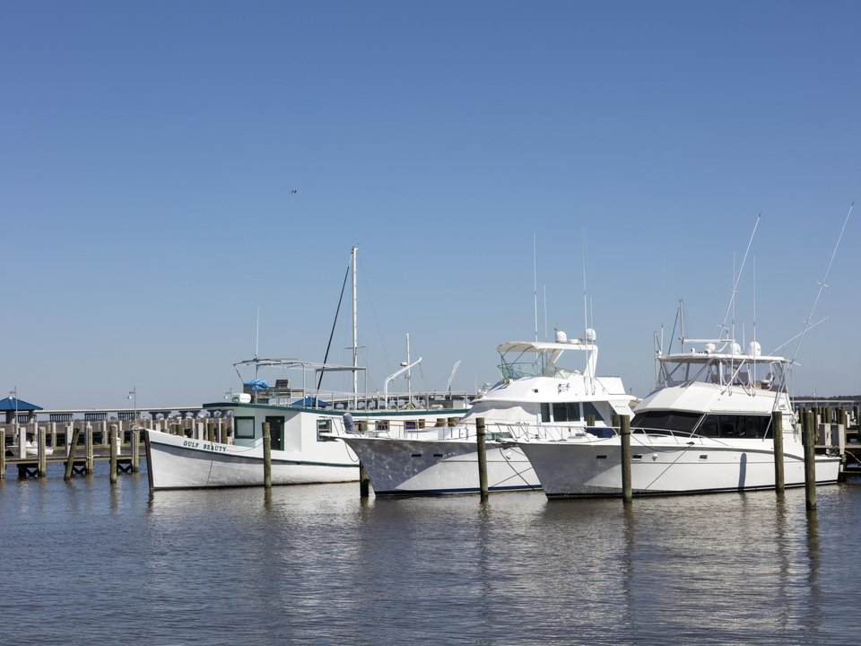

Old Town · Inn
The Bay Town Inn
A small inn across from the beach in Old Town.
Official details for The Bay Town InnAn artsy little town on the Mississippi Gulf Coast.
Bay St. Louis calls itself “a place apart”: a small town on the Gulf with galleries, porches and seafood restaurants along Beach Boulevard. Walk Old Town on Second Saturday, eat oysters looking over the bay, visit the INFINITY Science Center beside NASA’s rocket-engine test site and drive to Ocean Springs for Walter Anderson’s art.

In our plane it’s a short flight.
Where we’re staying Dinner Things to do The plan
I’ll handle the flight planning; you handle the fun planning! Pilot view
Time illustration: direct distance at 150 KTAS plus 15 minutes for departure and arrival, matching the discovery page. Use ForeFlight for your actual flight plan.
Check the weekend weather at both ends → Flight category, your minimums and the crosswind on the best runway.
More in Aviation & getting around below. Crew cars change often: call the FBO before you go. How to have a rental car waiting at the FBO · Know something we missed? Tell us.
KHSA, Stennis International Airport, is a towered field with a long runway, about 15 minutes north of Old Town Bay St. Louis.
Stennis International Airport, Bay St. Louis, MS
Confirm FBO hours, ramp fees and rental-car or courtesy-car options. No live fuel price is shown.
Expect military and training traffic. Summer brings afternoon storms, and hurricane season runs June to November. About 570 nm from Myrtle Beach: plan a fuel stop or a long nonstop leg.
Rates and availability need travel dates.
A small inn across from the beach in Old Town.
Official details for The Bay Town InnA resort on the bay with a golf course and pools.
Official details for Hollywood Casino Gulf CoastA large resort with a spa, about 45 minutes east.
Official details for Beau RivagePrices and availability for your dates, through our partner Stay22. This is an affiliate link: we may earn a commission at no cost to you. The picks above are never paid.
Reserve weekend dinners.
Seafood, steaks and cocktails with views of the bay.
Official details for 200 North BeachA local favorite for steaks, oysters and Gulf fish.
Official details for Field’s Steak & Oyster BarA casual beach restaurant for a long lunch.
Official details for Lemoine’s LandingAn easy, low-key weekend.
Galleries, antique shops and cafés; the Second Saturday art walk is the liveliest night.
Old TownA space and earth science museum and the visitor center for NASA’s Stennis Space Center.
INFINITYWalk or bike the beachfront and the bridge to Pass Christian.
Coastal MississippiThis prototype links to the local visitor site. It does not yet match events to your travel dates.
An art walk with open galleries and music in Old Town.
Second Saturday for Second SaturdayParades along the Mississippi Gulf Coast.
Coastal Mississippi for Mardi GrasWarm, with fewer storms than summer.
Check the local calendar when choosing a weekend, and confirm dates and tickets with the organizer.
A sample weekend: art, seafood and space. No bookings or availability confirmed.
Land at KHSA mid-morning.
INFINITY Science Center.
Lunch on the beach in Old Town, then back to the FBO.
Land at KHSA, subject to weather and your actual flight plan.
Walk Old Town and the beach.
Dinner at 200 North Beach.
INFINITY Science Center, near the airport.
Drive to Ocean Springs for the Walter Anderson Museum.
Dinner at Field’s.
Lunch at Lemoine’s Landing.
Allow time at the FBO.
Summer storms build in the afternoon; leave early.
The Walter Anderson Museum in Ocean Springs.
Galleries in Old Town.
Sunset over the bay.
These details make the difference between an appealing list and a usable getaway.
Lodging first, then dinners.
Plan around it for the liveliest Old Town evening.
About 570 nm. Plan a fuel stop or a long nonstop leg.
June through November. Keep plans flexible.
Picks and links reviewed by WingAway Weekends. Hours, prices, menus and availability change often, so confirm directly with each place before booking. Spotted something out of date, or have a favorite we missed? Email us at hello@wingawayweekends.com.
WingAway Weekends helps you discover the destination. Use ForeFlight and current official aviation information for route, performance, weather, NOTAMs and preflight decisions. Flight planning and PIC responsibility stay with the pilot.